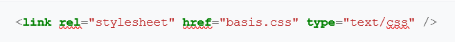

Introduktion
Css er styling på et HTML dokument, og det vil altså sige det er her man kan få lov at designe og give siden det udseende man ønsker. Css står for cascading style sheets, og det bliver brugt til at beskrive og bestemme udseendet af en hjemmeside. Man kan godt skrive CSS styling direkte i et HTML dokument, det kan både gøres med inline (hvor strukturen så vil forsvinde), men det kan også gøres embedded, hvor man skriver CSS øverst i HTML dokumentet (så er der altså stadig struktur i HTML delen). Ingen af disse metoder er dog optimale, da det enkelte stylesheet kun er gældende for dette enkelte HTML dokument man skriver i, derfor er det optimale at lave CSS i et separat dokument. Hvis man laver CSS i et separat dokument, kan den styling bruges på flere HTML dokumenter, og det giver et bedre overblik, både på HTML og CSS. Hvis man laver et separat CSS-dokument puttes linket ind øverst i HTML-dokumentet, og linket er som følgende:

CSS syntaks
Et CSS element har også en bestemt syntaks, og er ligesom et HTML element bygget op af flere dele. Den første er selectoren, her vælger man hvad der skal styles, det kan f.eks. en .class eller et #id. Man kan f.eks. vælge at give alle #id’er samme font eller font størrelse. Herefter kommer den første krøllede parentes, hvor selve deklarationen starter, herefter kommer der en property, som angiver hvilken ændring man gerne vil foretage (det kan f.eks. være at man vil ændre font). Efter property kommer value som fortæller hvordan det skal ændret (f.eks. at fonten skal være sans-serif), og til sidst kommer der et semikolon (som viser at stylingen er afsluttet i denne deklaration) og slutningen på den krøllede parentes som lukker CSS-elementet. Npr man bruger CSS er det også vigtigt at huske på kaskadereglerne, som gør at det der er stylet eller skrevet sidst i dokumentet er det gældende. Det vil altså sige at hvis du styler 2 ting på forskellige måder, er det nederst, og højst sandsynligt, sidst skrevet det der er gældende.Eksempel på CSS opbygning